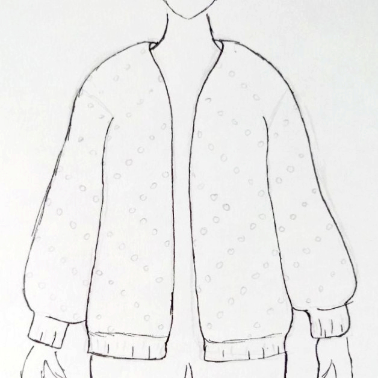

Cárdigan Crush y el proceso de diseño
En el post de hoy, queremos hablaros de cómo nos enfrentamos al proceso de diseño. Para ello, Raquel os contará cómo llegó a diseñar el cárdigan Crush, cuyo patrón hemos publicado recientemente (¡descárgatelo!).
La verdad es que pocas veces he tejido un patrón tal cual. Casi desde que empecé a tejer, sin tener mucha idea, modificaba los patrones para adaptarlos a mis medidas, mis gustos y mis recursos. El resultado de estas exploraciones es un montón de proyectos inacabados o inútiles, a los que tengo más cariño que otra cosa, y un montón de aprendizaje.
Sin duda, hay muchísimas creadoras con talento increíble y que publican diseños preciosos. Y tejer patrones de otras personas es una muy buena manera de aprender. Sin embargo, supongo que siempre he tenido una sensación de “¿Por qué voy a ceñirme a un patrón cuando puedo tejer lo que quiera?”. Y es que me encanta la libertad que puedes llegar a sentir con un hilo, una aguja y tu imaginación.
En algún momento empecé a crear mis propios diseños. Generalmente, algo me inspiraba una idea, que me ponía a tejer como una loca sin tener mucha idea de lo que iba a salir. El resultado rara vez era satisfactorio y, aunque disfrutaba del proceso, era un poco frustrante.
Con el tiempo, he aprendido que planificar bien un diseño ayuda muchísimo a obtener mejores resultados y que dedicarle tiempo a las primeras fases (¡antes de ponerte a tejer!) ahorra mucho tiempo a la larga.
Proceso de diseño
Inspiración
La inspiración para crear un diseño puede venir de cualquier parte. Puede ser de un material, una imagen, una prenda de ropa, una textura, una combinación de colores, … Las posibilidades son infinitas, y lo mejor es que intentes observar bien todo lo que te rodea en busca de esa inspiración. En el caso del cardigan Crush, todo surgió del hilo Mohair. Queríamos participar en el reto organizado por Casasol para diseñar prendas con sus nuevas madejas de Mohair, y nosotras nos moríamos de ganas por probarlo, así que nos lanzamos a pedirlas sin pensarlo demasiado. Tejer mohair a ganchillo es lento, engorroso y muy difícil de deshacer. Por eso nos decidimos a combinarlo con otro tejido y el Palomitas nos pareció la opción perfecta. La idea de combinar estos 2 hilos fue la chispa que encendió la inspiración de este diseño.
Moodboard
En cuanto nos surge una pequeña idea, es buen momento para ponerse a trabajar en el moodboard. Consiste en crear un tablón, en el que recopilaremos las imágenes que ayuden a inspirar nuestro diseño, tanto en aspectos concretos (colores, texturas, formas) como en sensaciones. Aunque te pueda parecer que este paso no es muy útil, es una excelente forma de comunicar tu diseño, así como de concretar las ideas que tienes en la cabeza. En esta etapa, os recomendamos encarecidamente el uso de Pinterest. Es una fuente inagotable de imágenes e ideas, y nosotras la usamos para cada diseño. Como podéis ver, para el cardigan Crush me inspiré en el invierno, el rosa y las cosas calientes y blanditas.
Bocetos

A continuación, toca ponerse a dibujar. Este paso es fundamental para transformar tu idea mental en algo factible y una herramienta genial para probar ideas y empezar a visualizar cómo va a quedar tu prenda final. Anímate, aunque el dibujo no sea tu fuerte, ya que te va a ayudar muchísimo a encontrar tu idea definitiva y lo importante es que lo entiendas tú. Puedes hacerlo por libre o usar plantillas de cuerpos y dibujar las prendas encima. A nosotras, que no somos ningunas artistas, bocetar las prendas sobre cuerpos nos ayuda un montón, ya que es la única manera de acertar con las proporciones. Yo suelo hacer un boceto de la construcción de la prenda y, al menos, uno de la prenda puesta sobre un maniquí, en la que visualizo cómo quiero que quede sobre el cuerpo. Es un buen momento para ir pensando las medidas que quieres que tenga la prenda (cómo quieres que quede de larga, de holgada, etc.) y cómo la vas a construir.

Muestra
Llegados a este punto, entiendo que quieras ponerte a tejer ipso facto, pero siento decirte que antes tienes que tejer una muestra. A mí siempre me ha costado hacerlas, sin embargo, con el tiempo he aprendido que son muy útiles de cara a enfrentar el diseño y a comprobar como se traducen tus ideas al mundo real. Por un lado, la muestra te da la oportunidad de probar todos los puntos que tienes pensado usar en el diseño, visualizar cómo quedan juntos, probar cómo puedes pasar de uno a otro, cómo quedan los cambios de color, entre otras muchas cosas. Por el otro, saber lo que ocupan tus puntos, te permite planificar todo el patrón antes de tejerlo. Eso sí, es importante que bloquees la muestra antes de medirla. Una vez tenemos todo claros (las medidas, los puntos, la muestra y la construcción), podremos hacer los cálculos necesarios para escribir el patrón antes de tejerlo. Con este diseño, en cuanto hice unos puntos con la combinación de hilos, me encantó que el hilo Palomitas era muy esponjoso y mullido, y el mohair le añadía una capa de pelitos y suavidad deliciosa. Sin embargo, se perdía un poco y el reto era trabajar con Mohair así que quise darle cierto protagonismo. Pensé en hacer alguna franja o zona sólo en Mohair, pero esto afectaría demasiado a la estructura del diseño. Al final, me decidí por hacer estos puntos bobble, y en cuanto me puse a hacer la muestra confirmé que eran justo lo que estaba buscando.
¡Hora de tejer!
¡Por fin! Sólo queda ponerse manos a la obra y tejer el diseño. Si has pasado por todo este proceso, ya tendrás una idea clarísima de lo que quieres hacer. Obviamente, los he presentado de una manera secuencial, pero puedes ir iterando por todas las etapas hasta que decidas que tu diseño es justo lo que estabas buscando. Cuando esto ocurre, es precioso porque empiezas a elaborarlo teniendo muy claro lo que tienes que hacer en cada momento. Además, ya le has cogido cariño a la pieza y es un gustazo ir viendo cómo va tomando forma tal y como la habías visualizado. Siempre puede haber algún fallo y puede que tengas que rectificar detalles del patrón, pero te aseguro que, si le has dedicado el esfuerzo necesario, todo va a ir mucho más rodado que si vas “a lo loco”. Este cárdigan fue la primera vez que realicé un diseño y lo tejí a la primera, sin tener que deshacer constantemente porque no queda como yo me esperaba.
Conclusiones
Aunque pueda parecer una pérdida de tiempo, planificar bien un diseño, no sólo ayuda a que acabes creando proyectos mucho más satisfactorios, sino que te acabará ahorrando tiempo y frustraciones. A menudo, nos sentimos poco inspiradas, pero basta con dedicarle un rato a buscar, observar, pensar, tocar y bocetar para que empiecen a fluir las ideas, así que no te cortes.
Por último, te recomendamos que te mantengas informada de las convocatorias de revistas o concursos, ya que suelen partir de un moodboard, que ya sirve de inspiración. Participar en una de estas convocatorias es una buena manera de poner en práctica todo este proceso de diseño, ya que te “obliga” a llevarlo a cabo en un plazo de tiempo limitado y… ¿quién sabe? ¡Igual te cogen!